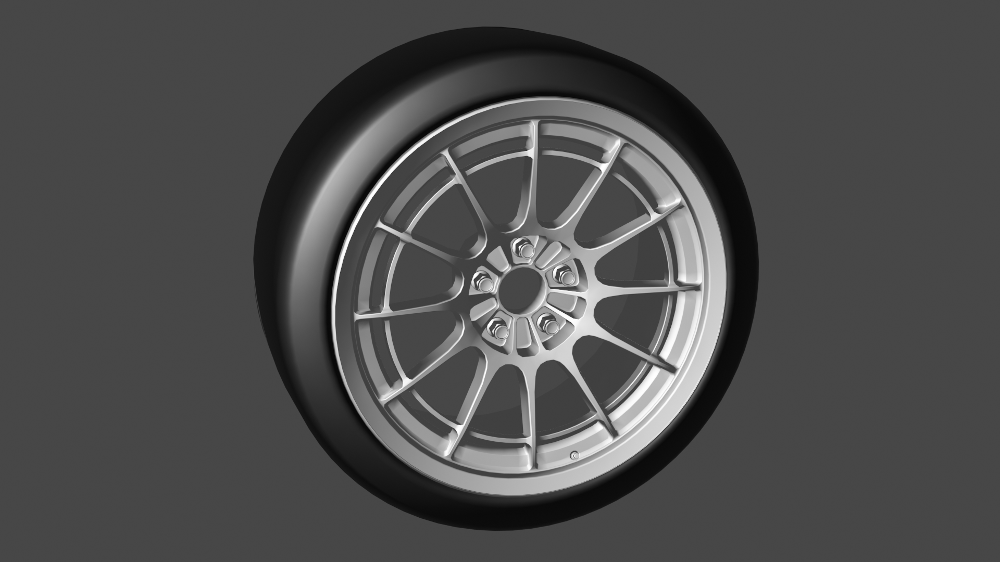
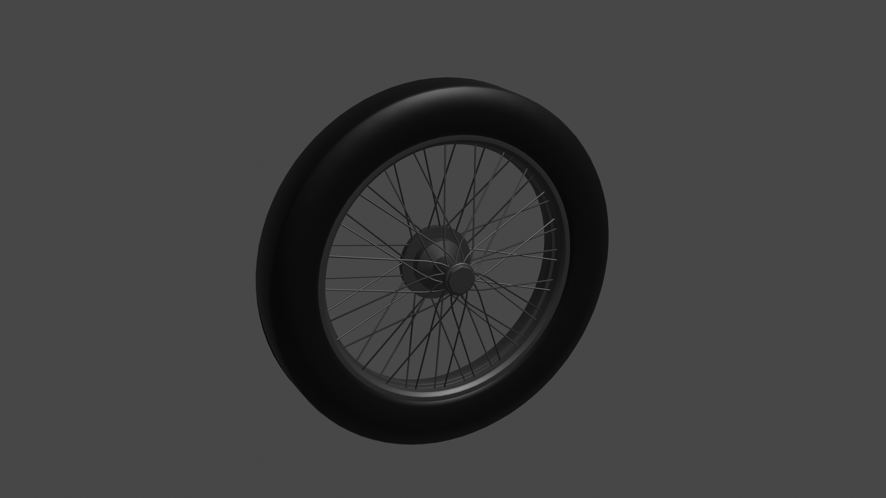

Добро пожаловать в мир колесных дисков BBS!

BBS — один из ведущих мировых производителей автомобильных колёсных дисков. BBS производит диски для автоспорта, OEM-заказчиков и розничных покупателей. Диски BBS поставляются на конвейеры таких компаний как: BMW, Audi, Mercedes-Benz, Porsche, Ferrari, Maserati, Rolls Royce, Jaguar и Volkswagen.